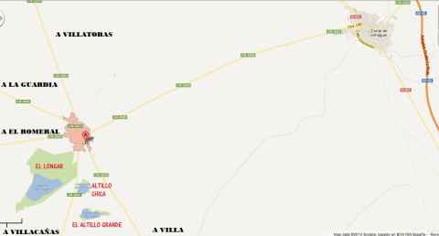
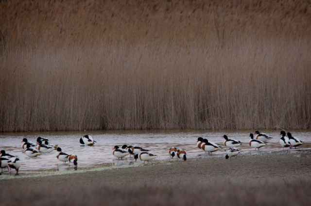

En un lugar de la Mancha.....Lillo (Toledo)
Lugares de Interes
Aeródromo de Lillo
Aeródromo deportivo con actividad de vuelo sin motor, avionetas y paracaidismo. En él se celebraron los campeonatos mundiales de vuelo a vela en el año 2001.
Indicativo Oficial OACI: LELT
- Frecuencia radio TWR: 123'375 Mhz
- Pistas 12-30
- Orientación: 120º/300º Elevación: 681 Metros (2.260 pies)
- Longitud (asfalto): 750 Metros (0'41 Millas Náuticas).
- Anchura (asfalto): 18 Metros
- Longitud Total: 810 Metros (0'44 Millas Náuticas).
- Anchura Total: 92 Metros.
- Coordenadas geogáficas:Centro de las Pistas: N39º 43' 02.00" W003º 19' 15.9"(N39º 43.03' W003º 19.27')
El aeródromo está ubicado a 1 km al suroeste del pueblo de Lillo, y aproximadamente a 10 millas dirección este-sureste del VOR de Villatobas.
Campeonatos organizados por el RACT en el Aeródromo de Lillo desde su inuguración (junio del 2000) :
- Campeonato de Vuelo a Vela de los II Juegos Aéreos Mundiales 2001
- XXXII Campeonato Nacional de Vuelo a Vela 2000

Refugio-Observatorio en la Laguna del Longar
Estas en estas fechas de agua y lluvia y recien fundada la primavera es una delicia pasearse por lo que se llama la mancha húmeda. La mayoría piensa cuando se habla de ella en las Tablas de Daimiel o en Ruidera. Pero lo cierto es que empieza aquí mismo a orillas del Riansares y que podríamos disfrutar de esos paisajes lagunares a unos metros de Corral de no haber sido por la desecación de la Laguna de la Serna.
Para observar los idílicos paisajes de la RESERVA de la BIOSFERA de la MANCHA HÚMEDA solo hay que acercarse 10km hasta Lillo donde podremos encontrar la Reserva Natural de la LAGUNA EL LONGAR.

Itinerarios Se pueden recorrer caminando por sus orillas. Existe un observatorio de aves en la laguna del Longar. También merece la pena recorrer sus alrededores donde abundan aves esteparias.
Reserva Natural Laguna el Longar
Este es un conjunto lagunar característico del paisaje manchego.
Las lagunas del Longar, el Altillo Grande y el Altillo Chica cubren en total 407 Ha.
El conjunto está incluido en el IBA #194 (Llanos de Tembleque – La Guardia, Toledo) del inventario de áreas importantes para las aves de España y se encuentra situada en la Reserva de la Biosfera de la Mancha Húmeda.
La laguna del Longar, la más extensa, está situada cerca del núcleo urbano de Lillo y no se seca. Por el contrario, las lagunas del Altillo Grande, Altillo Chica y la Albardiosa muestran una acusada estacionalidad y rápidos procesos de evaporación con la formación de una costra salina. Estas lagunas endorréicas hipersalinas situadas sobre calizas del Neógeno constituyen importantes ejemplos de ecosistemas lagunares salinos que antaño se extendían por gran parte de la llanura manchega.
Fauna: El principal valor faunístico de la zona lo constituyen las aves acuáticas, fundamentalmente durante el periodo reproductor. El Longar cuenta con una de las mejores colonias manchegas de pagaza piconegra y también podemos encontrar tarro blanco todo el año y limícolas en los pasos. Asimismo, destaca la presencia de aves esteparias, incluyendo alaúdidas como la alondra de Dupont, o las gangas ibérica y ortega que suelen beber en las lagunas. Una lista de las observaciones en estas lagunas durante los últimos años está disponible en el cuaderno de aves de la SEO bajo el nombre de Laguna de Lillo.
- Aves residentes: tarro blanco, pato cuchara, ánade azulón, sisón, avutarda, alcaraván, ganga, ganga ortega, alondra de Dupont, calandria, cogujada montesina, gorrión chillón, aguilucho lagunero.Los tarros blancos son típicos de estas lagunas
- Aves estivales: cigüeñuela, avoceta, chorlitejo patinegro, archibebe común, pagaza piconegra, abejaruco, terrera común, bisbita campestre, lavandera boyera, buitrón, collalba rubia
- Aves en paso: zampullín cuellinegro, grulla común, limícolas.

Los flamencos del Longar Lillo
Además de todas estas curiosas aves nos podemos encontrar con otras sorpresas como FLAMENCOS que han encontrado en las lagunas manchegas un lugar perfecto para vivir. En la zona hay cientos de lagunas y estas aves cambian de una laguna a otra con facilidad. Si no los encontramos alli habrá que buscarlos en la Laguna Larga de Villacañas, las Yeguas de Alcazar o en Manjavacas de Mota del Cuervo
Merece la pena hacer toda la ruta lagunar para ver a estas aves.